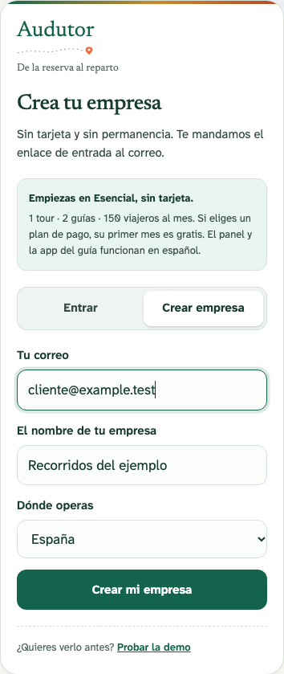
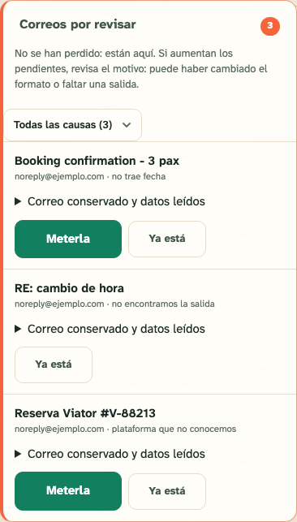
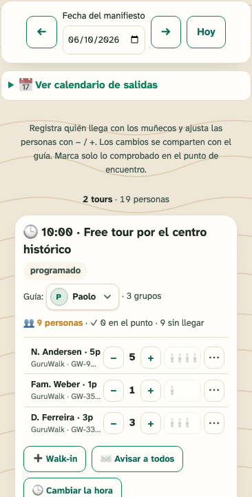

09:15 · Daily brief2 departures · 1 assignment pending
10:00 · CentreGuide assigned
Prepare departures
Bookings, emails to review, guides and availability. Focus on what needs a decision.
For free tour and walking tour companies
Bring bookings together, organise departures and close each tour’s accounts. In the operator panel and on the guide’s phone.
Free Essential plan · No card · 0% Audutor booking commission
The uncertain email does not change capacity until a manager confirms it.
Your actual split depends on your fees and rules. Audutor records and calculates; it does not collect tips.
One route book, three moments. Try −, + and walk-ins. This sample uses fictional data and sends or saves nothing.
Recognised booking emails and bookings from your website.
The operator prepares the day. The guide works with their departure. Attendance and accounts stay on record afterwards.
Bookings, emails to review, guides and availability. Focus on what needs a decision.
A mobile manifest, arrivals, walk-ins and observations shared with the operator.
Recorded tips, splits and no-shows. Reconciliation prepares a claim for you to review and submit.
Your profiles, your tours and your email. Review the information before starting your operation.
Log in with your email. Add your tour links and check times and meeting points. If a page cannot be read, you can continue manually.

Connect a compatible mailbox or set up available forwarding. Check the initial scan and messages that need confirmation.

Review bookings and capacity, assign a guide and check their manifest. Verify a booking, a change and a cancellation before treating the connection as ready.

You do not need to buy another email address. The operator panel is in Spanish. Screens show fictional data; select one to enlarge it.
A traveller-based subscription and an optional assistant. No commission on your bookings or tips.
billed yearly · 0 €/year
At 150 travellers, review whether you need Pro.
Create my companybilled yearly · 450 €/year
Above 2,500: +€5/month per 250, up to 10,000. Premium is cheaper from around 7,500 travellers.
Prepare my Pro trialbilled yearly · 1,490 €/year
Above 10,000: +€15/month per 1,000.
Prepare my Premium trialEvery plan includes the booking inbox, manifest, accounts and your booking page. GuIA is optional at €39/month. Essential displays a “with Audutor” badge.
Prices exclude VAT. Free and manual bookings have no surcharge. Their travellers count towards monthly volume. Platform and payment-provider fees are separate.
The first month is free when you activate a paid plan. Your account starts in Essential; for multiple tours, we help you prepare Pro or Premium.
Annual equivalent: 450 €
Estimate from the published tariff. Volume excess is reviewed with support before changing your subscription; it is not billed automatically. The annual plan and GuIA are charged yearly.
Test answers using your real tours before enabling the chat. Audutor works without the assistant.
In the example square, by the fountain. The guide carries a green umbrella.
Source for this example: the meeting point and guide identifier confirmed in the tour facts.
Can I bring my dog?I do not have a confirmed rule for this tour. I will pass the question to the team.
Illustrative example. This is not a connected chat or a response-time promise.
A departure time can be corrected in the manifest. Changes on the platform also need to be made there.
Choose another day and time in the manifest, with capacity visible. Guides receive the observation.
A second copy of an already applied cancellation no longer returns to the email review queue.
You can keep selling through them. Audutor imports booking emails it recognises. This does not provide a connection that closes availability across all platforms.
Connecting the mailbox starts an initial scan of available emails within the import scope. Check your upcoming departures and pending messages; not every email can be recognised automatically.
You can use an existing compatible mailbox. If available for your account, you can also forward emails to Audutor’s inbound address. Company creation uses your usual email.
Add the guide app to your home screen and load the departure while connected. It can show saved data and record supported actions offline; they sync on reconnection. Check the flow on the phone you will use.
You review and send prepared messages through WhatsApp or SMS. Audutor records attendance and prepares reconciliation; it does not automatically report no-shows to every platform.
It records money collected elsewhere and calculates the split according to your rules. Collecting money and paying the guide happen outside Audutor.
Audutor works without GuIA. The assistant is optional at €39/month on top of your plan. Its first trial month is not charged.
Essential is free with no expiry: 1 tour, 2 guides and 150 travellers per month. Paid plans include a first trial month when activated. For multiple tours, ask for help preparing the appropriate plan.
Create your company, review your tours and check your first bookings. If you want help with setup, we are here.